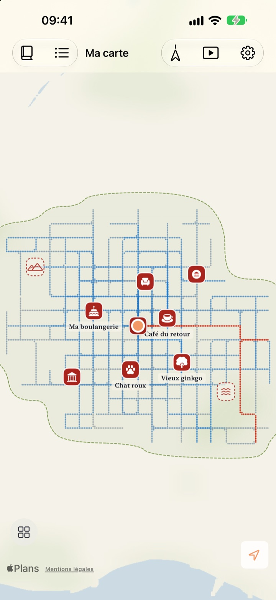
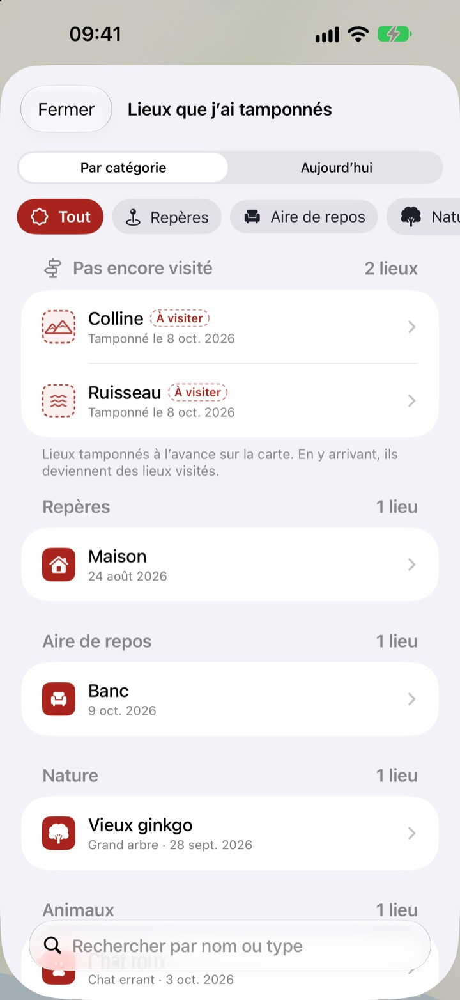
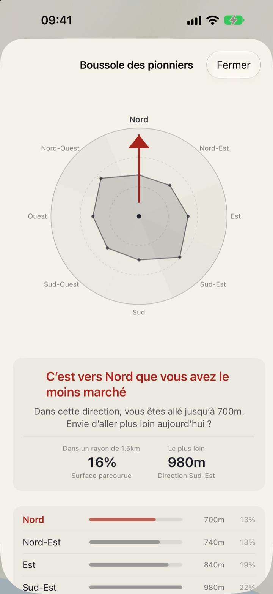
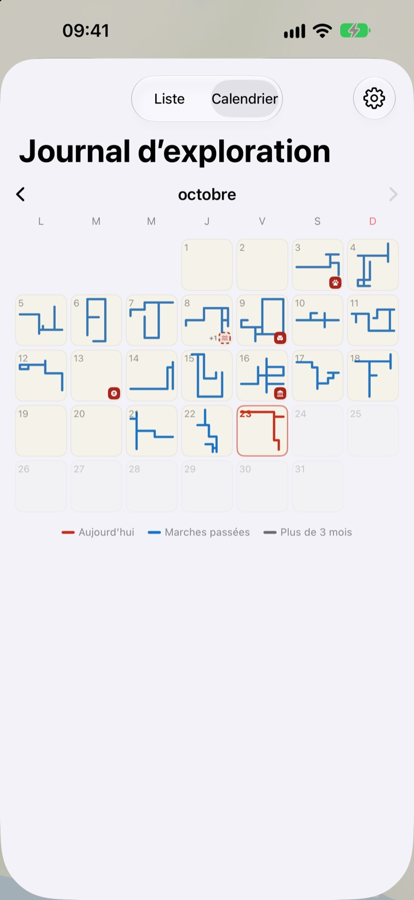

Une carte qui ne se
remplit qu’à pied
Elle commence sur une feuille blanche. Seuls les lieux où vous marchez se remplissent, point par point, et refaire cent fois la même rue ne l’élargit pas. Pour agrandir la carte, prenez un nouveau chemin.
Toutes les fonctions sont gratuites, sans publicité.

Faites un tour
Faites glisser un doigt ou la souris sur le papier pour marcher. Les points bleus sont des rues déjà parcourues. Regardez comment « Le chemin d’aujourd’hui » évolue selon que vous repassez dessus ou partez ailleurs.
Toujours les mêmes rues ?
Un podomètre compte vos pas sans jamais demander où ils vous ont menés. Maison, gare, retour : l’anneau se remplit très bien, et la petite rue d’à côté reste un mystère pendant des années. Buktu Buktu ne compte que les chemins que vous parcourez pour la première fois. De quoi faire un détour d’une rue aujourd’hui.
Tamponnez les lieux visités et ceux qui vous tentent
Tamponnez l’endroit où vous êtes, ou appuyez longuement n’importe où sur la carte. 212 tampons au choix, classés par catégorie.
Un tampon posé là où vous n’avez jamais marché reste un lieu à visiter, puis devient un lieu visité quand vous y allez vraiment. Photographiez l’enseigne d’un commerce : l’arrière-plan est détouré et elle se dresse comme un sticker à cet endroit.

Prochaine balade : la direction la moins explorée
La Boussole des pionniers découpe les alentours en huit directions et indique celle que vous avez le moins parcourue.
Empreintes du jour aligne dans l’ordre les lieux où vous vous êtes arrêté aujourd’hui, avec la distance marchée entre chacun.

Chaque jour laisse une forme
Le calendrier dessine la forme de la marche de chaque jour plutôt qu’un chiffre. Tenez un journal avec texte et photos, et voyez quelle part de chaque balade était inédite.
Choisissez une période et regardez votre carte se dessiner en vidéo, que vous pouvez exporter.

Trois étapes pour commencer
- 1
Ouvrez l’app
Une feuille blanche se déplie.
- 2
Autorisez la position
Choisissez « Toujours » et activez « Mouvements et forme » pour enregistrer vos marches sans ouvrir l’app.
- 3
Sortez
Plus la rue est inconnue, plus la carte grandit.
Lire la carte
- Points rouges
- là où vous avez marché aujourd’hui
- Points indigo
- vos marches passées, plus foncées là où vous passez le plus
- Points gris
- les lieux où vous n’êtes pas revenu depuis plus de trois mois. Ils pâlissent sans jamais disparaître
- Tampon en pointillés
- un lieu « À visiter ». Il devient visité une fois que vous y êtes
- Les chemins que j’ai dessinés
- longueur totale des chemins parcourus pour la première fois
- Le chemin d’aujourd’hui
- la part de la marche du jour qui était nouvelle
- Tout voir
- dans les réglages, ouvre la Boussole des pionniers, Empreintes du jour et le film de votre carte
Choisissez entre la carte à l’encre et la Carte illustrée.
Toutes les fonctions sont gratuites
Gratuit
- Une carte qui ne se remplit qu’à pied, avec le suivi des nouveaux chemins
- 212 tampons et des stickers d’enseignes
- Boussole des pionniers et Empreintes du jour
- Calendrier et journal avec texte et photos
- Export de la vidéo de votre carte qui se dessine
- Widgets pour l’écran d’accueil et l’écran verrouillé
- Synchronisation iCloud entre vos appareils
Soutenir le développeur
- Laissez un petit pourboire depuis les réglages, si le cœur vous en dit
- Le pourboire ne débloque rien. L’app reste exactement la même
Sans publicité, sans abonnement.
Questions
J’ai marché, mais rien n’apparaît sur la carte.
Allez dans Réglages > Buktu Buktu > Position, choisissez « Toujours » et activez « Mouvements et forme ». L’enregistrement fonctionne alors même app fermée. Si vous avez choisi le mode d’enregistrement économe en batterie dans les réglages de l’app, ouvrez-la avant de partir. Les positions peu précises sont conservées mais pas dessinées.
Les trajets en voiture ou en métro sont-ils enregistrés ?
Non. L’app s’appuie sur les données de mouvement et la vitesse pour ne dessiner que la marche et la course, et écarte les tronçons qui ressemblent à un véhicule. Il peut lui arriver de se tromper.
Je fais le même trajet chaque jour et la carte ne grandit pas.
C’est la règle. Tout ce qui se trouve à moins de 30 m d’un endroit déjà parcouru compte comme le même chemin, donc seuls les nouveaux chemins s’ajoutent à « Les chemins que j’ai dessinés ». Le trottoir d’en face compte aussi comme le même chemin. La Boussole des pionniers vous montre où vous avez le moins marché.
Ma position est-elle envoyée quelque part ?
Pas au développeur. Vos pas, tampons, journal et photos restent sur votre appareil et dans votre iCloud privé, et le développeur ne peut pas les voir. Les statistiques d’usage anonymes n’incluent jamais de coordonnées, de texte de journal, de noms de lieux ni de photos. Les services d’Apple Plans servent à convertir les coordonnées en noms de lieux. Pour en savoir plus, consultez la Politique de confidentialité ci-dessous.
Mes données me suivent-elles sur un nouvel appareil ?
Oui. Connectez-vous avec le même compte Apple sur le nouvel appareil et laissez iCloud activé : vos pas, tampons, journal et photos vous suivent.
Comment supprimer un tampon ou une photo ?
Supprimez les tampons depuis la liste « Lieux que j’ai tamponnés », et maintenez le doigt sur une photo du journal pour la supprimer. Un moyen d’effacer d’un coup tous vos chemins et entrées de journal est prévu.
Comment ajouter le widget ?
Maintenez le doigt sur l’écran d’accueil, touchez Modifier > Ajouter un widget, puis choisissez Buktu Buktu. Pour l’écran verrouillé, maintenez le doigt dessus, puis touchez Personnaliser. Le widget de l’écran d’accueil montre la forme et la longueur du chemin du jour, celui de l’écran verrouillé la distance du jour.
De quoi ai-je besoin ?
D’un iPhone sous iOS 17.0 ou version ultérieure.
Comment vous contacter ?
Envoyez vos remarques depuis les réglages de l’app ou écrivez-nous à l’adresse ci-dessous. Nous répondons dès que possible.
Une question, une remarque ? Écrivez à leeo@kakao.com.